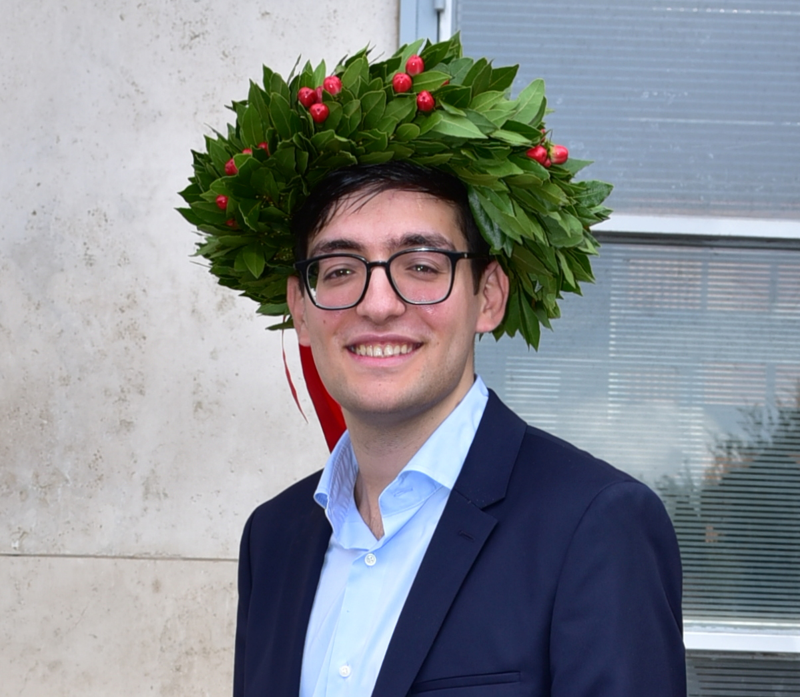

Sergio Torrico
Hi! I am Sergio Torrico. I am a Master's student in Mathematics at Sapienza University of Rome, about to defend my thesis on convexity in Symplectic Geometry and toric varieties with Prof. Guido Pezzini. In November 2026, I will start my Ph.D. in mathematics at the University of Rome Tor Vergata.
Research interests:
My main research interests include Symplectic Geometry, Lie Theory, Algebraic Topology, and Commutative Algebra.
View my CV (PDF)